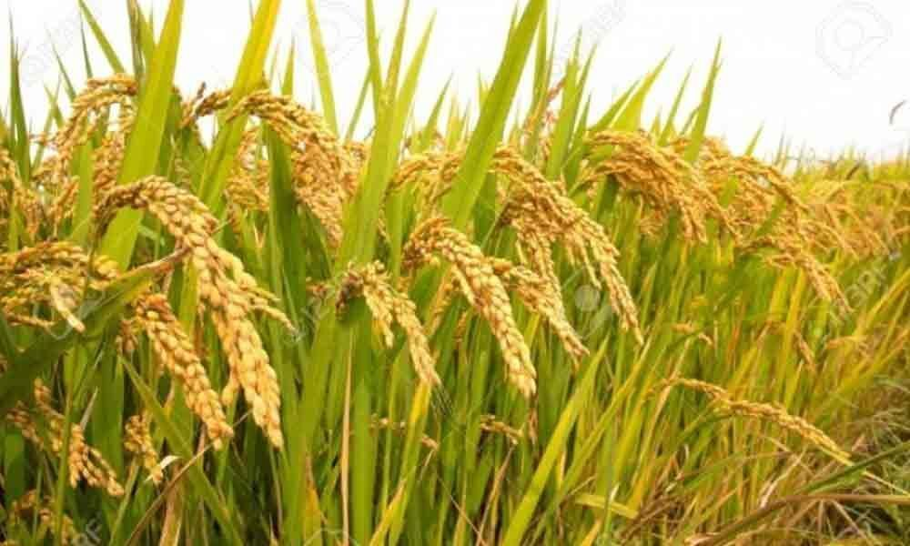
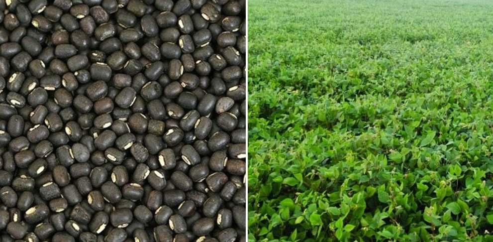
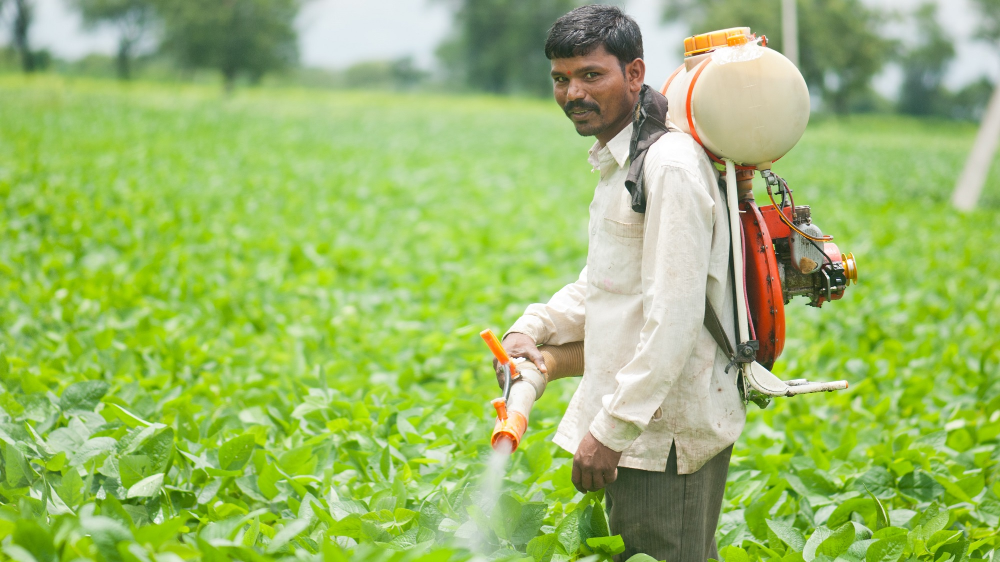
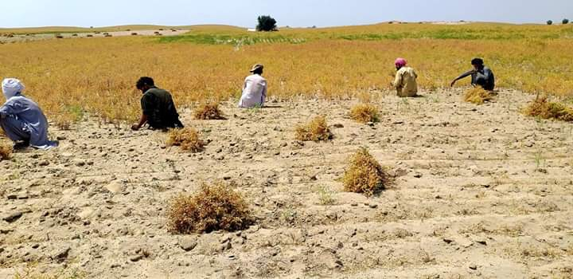
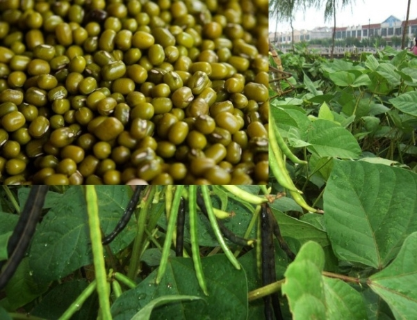
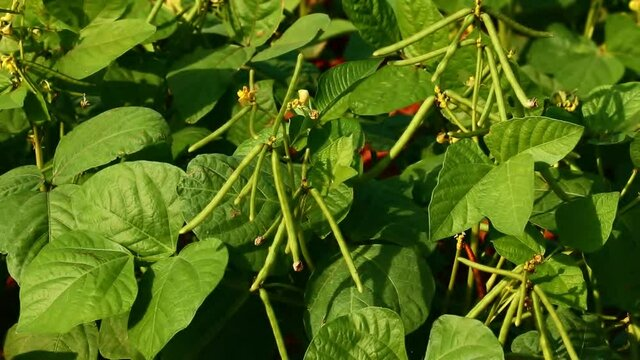

Home
Agriculture
Paddy
Black Gram
Green Gram
About Us
Contact
Welcome to Our Agriculture Website
Explore the finest agricultural products for a healthier world.

History of paddy... paddy, small, level, flooded field used to cultivate rice in southern and eastern Asia. Wet-rice cultivation is the most prevalent method of farming in the Far East, where it utilizes a sma Paddy, small, level, flooded field used to cultivate rice in southern and eastern Asia. Wet-rice cultivation is the most prevalent method of farming in the Far East, where it utilizes a small fraction of the total land yet feeds the majority of the rural population. Rice was domesticated as early as 3500 BC, and by about 2,000 years ago it was grown in almost all of the present-day cultivation areas, predominantly deltas, floodplains and coastal plains, and some terraced valley slopes. Paddies near Lake Inawashiro, Fukushima ken (prefecture), Japan. Paddies near Lake Inawashiro, Fukushima ken (prefecture), Japan. Bali: rice paddy Bali: rice paddy Aerial view of a rice paddy, Bali, Indonesia. Many paddies are flooded by rivers and rainfall during monsoon season, while others must be irrigated. The paddies have an impermeable subsoil and are bordered by earthen bunds to hold an average of 4–6 inches (10–15 centimetres) of water in the field for three-quarters of the growing season. In all countries, excluding India, paddies are worked by family labour alone and by the same methods as were used 2,000 years ago: hand cultivation with hoe and spade, or water-buffalo-, horse-, or ox-drawn plough with metal share. Various types of Paddy varieties are consumed in India are Basmati, White, Brown, Red, Jasmine, Parboiled, and Sticky Paddy. Of these, Basmati and White Paddy are most favored in the country. Paddy cultivated states for the Rabi in India are Assam, West Bengal, Odisha, Andhra Pradesh, and Tamil Nadu, etc. See full list on agrifarming.in



History of Black gram... Black gram (Vigna Mungo L.), is one of the important pulses crop, grown throughout the country. The crop is resistant to adverse climatic conditions and improve the soil fertility by fixing atmospheric nitrogen in the soil. It has been reported that the crop produces equivalent to 22.10 kg of N/ha., which has been estimated to be supplement of 59 thousand tonnes of urea annually. The pulse 'Black gram' plays an important role in Indian diet, as it contains vegetable protein and supplement to cereal based diet. It contains about 26% protein, which is almost three times that of cereals and other minerals and vitamins. Besides, it is also used as nutritive fodder, specially for milch animals. Madhya Pradesh, Uttar Pradesh and Andhra Pradesh are major blackgram growing states area-wise. The highest yield was recorded by the state of Bihar (898 kg/ha) followed by Sikkim (895 kg/ha) and Jharkhand (890 kg/ha). The National yield average is 585 kg/ha. The lowest yield was recorded in the state of Chattisgarh (309 kg/ha) followed by Odisha (326 kg/ha) and J&K (385 kg/ha). During kharif, it is cultivated throughout the country. It is best suited to rice fallows during rabi in southern and south-eastern parts of India. Blackgram needs relatively heavier soils than greengram. 20:40:20 NPK kg/ha along with 20 kg S/ha greatly increases yield of pulses and also benefit the succeeding crop. Among the micro nutrients Zn is the most deficient nutrient. So the application of Zn @ 25 kg/ha as basal gives very promising results. Boron and Molybdenum gives better results in acid soil. Foliar spray of 2% DAP and 2% KCl at Pre flowering stage enhances the yield.


History of Green Gram... Green Gram or moong is a native of India and Central Asia. It has been grown in these regions since prehistoric times. Moong is cultivated in India, Burma, Ceylon, Pakistan, China, Fiji, the Far East, Queensland, and Africa. In India, moong is grown in almost all the states. It is grown in about 34.37 lakh hectares with a total production of about 17.83 lakh tonnes of grain. (2019-20) The important moong growing states are Orissa, Maharashtra, Andhra Pradesh, Madhya Pradesh, Gujarat, Rajasthan, and Bihar. Soil Requirements For Moongbean Cultivation ; Moong is a crop that is grown on a variety of soils from red-laterite soils of south India to black cotton soils of Madhya Pradesh and sandy soils of Rajasthan. A well-drained loamy to sandy loam soil is best suited for moong cultivation. Saline and alkaline soils are not suitable for moong cultivation.. Green Gram or moong is a native of India and Central Asia. It has been grown in these regions since prehistoric times. Moong is cultivated in India, Burma, Ceylon, Pakistan, China, Fiji, the Far East, Queensland, and Africa. In India, moong is grown in almost all the states. It is grown in about 34.37 lakh hectares with a total production of about 17.83 lakh tonnes of grain. (2019-20) The important moong growing states are Orissa, Maharashtra, Andhra Pradesh, Madhya Pradesh, Gujarat, Rajasthan, and Bihar. Soil Requirements For Moongbean Cultivation ; Moong is a crop that is grown on a variety of soils from red-laterite soils of south India to black cotton soils of Madhya Pradesh and sandy soils of Rajasthan. A well-drained loamy to sandy loam soil is best suited for moong cultivation. Saline and alkaline soils are not suitable for moong cultivation..
 copy.jpeg)

.jpeg)
.jpeg)
.jpg)